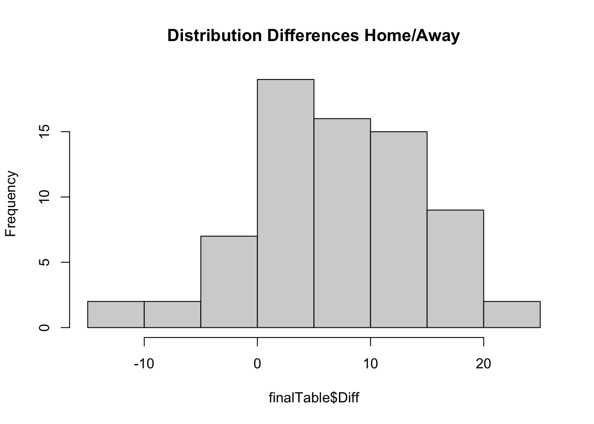
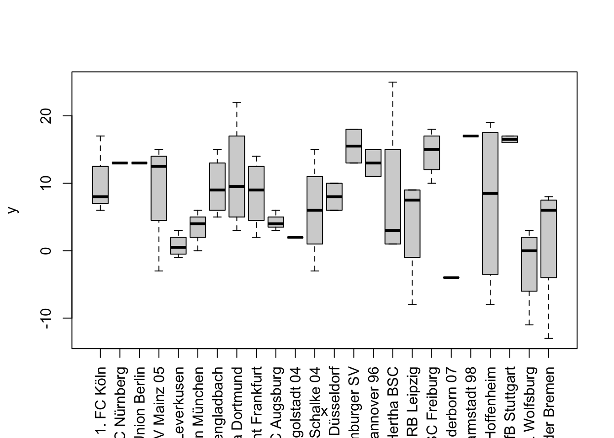
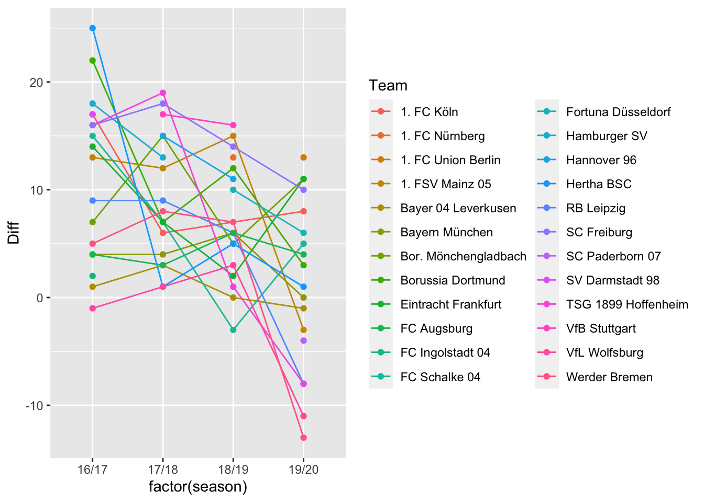

For my first project I turn to a familiar topic - soccer. Since my childhood I am passionate about soccer. I played in several teams, trained some kids, tracked nearly every game in the highest european divisions and discussed a lot with friends about games and transfers. So I am pretty sure to know everything about this sport. But do my knowledge hold against the raw data?
In this project I want to test some general hypothesis and check I the data confirm or contradict my view on soccer. On the following pages I will first introduce the data, then state my hypothesis and finally check if the data support my hypothesis.
I found the datasets on GitHub1. A User provides the results of the german Bundesliga, with matchday number, matchday date, teams and result. I add a factor variable with levels 1 to 3 that states the result as 'Draw', 'HomeVictory' and 'AwayVictory', as well as two integer variables for the goals. At least I add another dummy variable that states if the victory of a team was narrow, means a victory by one goal difference. The summary statistics of the datasets looks as follows. Sadly we could not get much valueable information out of this first summary. Therefore, we now have to perfom some statistics.
season1920$Team.1Goals <- as.integer(sub("-.*", "", season1920$FT))
season1920$Team.2Goals <- as.integer(sub("*.-", "", season1920$FT))
season1920$result <- factor(ifelse(season1920$Team.1Goals==season1920$Team.2Goals,0,
ifelse(season1920$Team.1Goals>season1920$Team.2Goals,1,2)),levels=c(0,1,2),
labels=c("Draw","HomeVictory","AwayVictory"))
season1920$narrowVict <-factor(ifelse(abs(season1920$Team.1Goals-season1920$Team.2Goals)==1,
1,0))
summary(season1920)## Round Date Team.1 FT
## Min. : 1.0 Length:306 Length:306 Length:306
## 1st Qu.: 9.0 Class :character Class :character Class :character
## Median :17.5 Mode :character Mode :character Mode :character
## Mean :17.5
## 3rd Qu.:26.0
## Max. :34.0
## Team.2 Team.1Goals Team.2Goals result narrowVict
## Length:306 Min. :0.00 Min. :0.000 Draw : 68 0:210
## Class :character 1st Qu.:1.00 1st Qu.:1.000 HomeVictory:123 1: 96
## Mode :character Median :1.00 Median :1.000 AwayVictory:115
## Mean :1.66 Mean :1.549
## 3rd Qu.:2.00 3rd Qu.:2.000
## Max. :8.00 Max. :6.000For all that can't remember preciously about the season I reproduce the final table. Using the aggregate function and ordering the result descending gives the following ranking. Like every year the Bayern won the league and qualified for the champions league. Dortmund, Liepzig and Gladbach also qualified for the champions league. Paderborn and Düsseldorf had to go to the 2. Bundesliga and Bremen keep the class in relegation. There is one small mistake in the table. Can you spot and correct it?
season1920$Team.1Points <- ifelse(season1920$Team.1Goals>season1920$Team.2Goals,3,
ifelse(season1920$Team.1Goals==season1920$Team.2Goals,
1,0))
season1920$Team.2Points <- ifelse(season1920$Team.1Goals<season1920$Team.2Goals,3,
ifelse(season1920$Team.1Goals==season1920$Team.2Goals,
1,0))
finalTableHome <- aggregate(x=season1920[, c(6,7,10)], by=list(season1920$Team.1),
FUN=sum)
colnames(finalTableHome) <-c("Team", "GoalsScored", "GoalsAgainst", "Points")
finalTableAway <- aggregate(x=season1920[, c(6,7,11)], by=list(season1920$Team.2),
FUN=sum)
colnames(finalTableAway) <-c("Team", "GoalsAgainst", "GoalsScored", "Points")
finalTableAway <- finalTableAway[ ,c(1, 3, 2, 4)]
finalTable <- rbind(finalTableHome, finalTableAway)
finalTable <- aggregate(x=finalTable[, c(2,3,4)], by=list(finalTable$Team),
FUN=sum)
colnames(finalTable) <-c("Team", "GoalsScored", "GoalsAgainst", "Points")
finalTable <- finalTable[order(finalTable$Points, decreasing = TRUE),]
rownames(finalTable) <- 1:18
print(finalTable)## Team GoalsScored GoalsAgainst Points
## 1 Bayern München 100 32 82
## 2 Borussia Dortmund 84 41 69
## 3 RB Leipzig 81 37 66
## 4 Bor. Mönchengladbach 66 40 65
## 5 Bayer 04 Leverkusen 61 44 63
## 6 TSG 1899 Hoffenheim 53 53 52
## 7 VfL Wolfsburg 48 46 49
## 8 SC Freiburg 48 47 48
## 9 Eintracht Frankfurt 59 60 45
## 10 1. FC Union Berlin 41 58 41
## 11 Hertha BSC 48 59 41
## 12 FC Schalke 04 38 58 39
## 13 1. FSV Mainz 05 44 65 37
## 14 1. FC Köln 51 69 36
## 15 FC Augsburg 45 63 36
## 16 Werder Bremen 42 69 31
## 17 Fortuna Düsseldorf 36 67 30
## 18 SC Paderborn 07 37 74 20Now we want to know if their are teams that perform significantly better at home than on the opponents pitch. Therefore, we compare gained points from the home and away table. It seems that teams on the upper half of the table have highly different results at home and away why teams on the margins make nearly the same amount of points at home and away. Only Bremen seems to be an exception from this finding. The question is if this result is by chance or might there be an explanation for this finding. I will load more data, namely the seasons from 2016 until 2018 and look for a similar effect.
colnames(finalTableHome) <-c("Team", "GoalsScored", "GoalsAgainst", "PointsHome")
colnames(finalTableAway) <-c("Team", "GoalsScored", "GoalsAgainst", "PointsAway")
finalTable <- merge(finalTable, finalTableHome[,c(1,4)], by="Team")
finalTable <- merge(finalTable, finalTableAway[,c(1,4)], by="Team")
finalTable <- finalTable[order(finalTable$Points, decreasing = TRUE),]
finalTable$Diff <- finalTable$PointsHome - finalTable$PointsAway
rownames(finalTable) <- 1:18
print(finalTable[ ,c(1,4,5,6,7)])## Team Points PointsHome PointsAway Diff
## 1 Bayern München 82 41 41 0
## 2 Borussia Dortmund 69 36 33 3
## 3 RB Leipzig 66 29 37 -8
## 4 Bor. Mönchengladbach 65 38 27 11
## 5 Bayer 04 Leverkusen 63 31 32 -1
## 6 TSG 1899 Hoffenheim 52 22 30 -8
## 7 VfL Wolfsburg 49 19 30 -11
## 8 SC Freiburg 48 29 19 10
## 9 Eintracht Frankfurt 45 28 17 11
## 10 1. FC Union Berlin 41 27 14 13
## 11 Hertha BSC 41 21 20 1
## 12 FC Schalke 04 39 22 17 5
## 13 1. FSV Mainz 05 37 17 20 -3
## 14 1. FC Köln 36 22 14 8
## 15 FC Augsburg 36 20 16 4
## 16 Werder Bremen 31 9 22 -13
## 17 Fortuna Düsseldorf 30 18 12 6
## 18 SC Paderborn 07 20 8 12 -4The new seasons are loaded from the same gitHub source and contain additional three seasons. The data manipulation is done in the same way as before and the results are stored in one data frame. A new character varible season is introduced to differentiate the seasons.
finalTable1920 <- finalTable
finalTable1920$season <- "19/20"
rm(finalTable)
for (i in 16:18) {
season <- read.csv(file=paste0("/Users/SimonThielen/Desktop/R/Daten/2021_02_07_Football/2010s/20",
i,"_",i+1,"/de1.csv"))
season$Team.1Goals <- as.integer(sub("-.*", "", season$FT))
season$Team.2Goals <- as.integer(sub("*.-", "", season$FT))
season$result <- factor(ifelse(season$Team.1Goals==season$Team.2Goals,0,
ifelse(season$Team.1Goals>season$Team.2Goals,1,2)),levels=c(0,1,2),
labels=c("Draw","HomeVictory","AwayVictory"))
season$narrowVict <-factor(ifelse(abs(season$Team.1Goals-season$Team.2Goals)==1,
1,0))
season$Team.1Points <- ifelse(season$Team.1Goals>season$Team.2Goals,3,
ifelse(season$Team.1Goals==season$Team.2Goals,
1,0))
season$Team.2Points <- ifelse(season$Team.1Goals<season$Team.2Goals,3,
ifelse(season$Team.1Goals==season$Team.2Goals,
1,0))
finalTableHome <- aggregate(x=season[, c(6,7,10)], by=list(season$Team.1),
FUN=sum)
colnames(finalTableHome) <-c("Team", "GoalsScored", "GoalsAgainst", "Points")
finalTableAway <- aggregate(x=season[, c(6,7,11)], by=list(season$Team.2),
FUN=sum)
colnames(finalTableAway) <-c("Team", "GoalsAgainst", "GoalsScored", "Points")
finalTableAway <- finalTableAway[ ,c(1, 3, 2, 4)]
finalTable <- rbind(finalTableHome, finalTableAway)
finalTable <- aggregate(x=finalTable[, c(2,3,4)], by=list(finalTable$Team),
FUN=sum)
colnames(finalTable) <-c("Team", "GoalsScored", "GoalsAgainst", "Points")
finalTable <- finalTable[order(finalTable$Points, decreasing = TRUE),]
rownames(finalTable) <- 1:18
colnames(finalTableHome) <-c("Team", "GoalsScored", "GoalsAgainst", "PointsHome")
colnames(finalTableAway) <-c("Team", "GoalsScored", "GoalsAgainst", "PointsAway")
finalTable <- merge(finalTable, finalTableHome[,c(1,4)], by="Team")
finalTable <- merge(finalTable, finalTableAway[,c(1,4)], by="Team")
finalTable <- finalTable[order(finalTable$Points, decreasing = TRUE),]
finalTable$Diff <- finalTable$PointsHome - finalTable$PointsAway
rownames(finalTable) <- 1:18
finalTable$season <- paste0(i,"/",i+1)
assign(paste0("finalTable",i,i+1),finalTable)
rm(season, finalTable, finalTableHome, finalTableAway)
}
finalTable <- rbind(finalTable1617, finalTable1718, finalTable1819, finalTable1920)Now that the data is loaded and transformed I can state some hypothesis to test on the data. The first hypothesis I already mentioned in the previous section is about the correlation between the rank of a team in the final table and it's different outcomes at home and away. The hypothesis is therefore:
H0: The rank in the table is independent of the difference between the outcome at home and away
H1: It is not
The second Hypothesis I want to adress is if there is an effect is it stronger on the midfield of the table than on the edges?
H0: The differents in home and away results is independet of the in the final table the team end up
H1: It is not
Before I do some specific statistics on the hypothesis, I will have a quick look over the general data. The summary table shows the 5-point-summary of the variable Diff. with a max of 25, which means 25 point more at home than away and a min of -13, which mean 13 points more away than at home. The median at 7 is slidly lower than the mean with 7.25 which suggest a skewness to the right, which can be observed on the histogram plot. The standard deviation is 7.66 by a rage of 38, with can be interpreted as a moderate spread of the data. The boxplots show that there are hughe differences between the teams over the different seasons, but there are also some teams that always have differences about the same amount and this is mostly around zero. Sometimes there are teams that have seem to have huge and constant differences, like Darmstadt or Paderborn, but this is due to the effect that they only stayed in the first devision for one season. This can be better observed in the time series plot where these clubs only have one dot. Also the graphs in this plot cross each other very often which is a sign that the differences are not constant over time. In the next section we now dig deeper into the hypotheses testing.
summary(finalTable)## Team GoalsScored GoalsAgainst Points
## Length:72 Min. : 26.00 Min. :22.00 Min. :19.00
## Class :character 1st Qu.: 37.75 1st Qu.:43.75 1st Qu.:36.75
## Mode :character Median : 47.50 Median :52.00 Median :44.50
## Mean : 51.21 Mean :51.21 Mean :46.86
## 3rd Qu.: 61.00 3rd Qu.:59.25 3rd Qu.:55.00
## Max. :100.00 Max. :74.00 Max. :84.00
## PointsHome PointsAway Diff season
## Min. : 8.00 Min. : 3.00 Min. :-13.00 Length:72
## 1st Qu.:21.75 1st Qu.:14.00 1st Qu.: 2.75 Class :character
## Median :27.00 Median :19.00 Median : 7.00 Mode :character
## Mean :27.06 Mean :19.81 Mean : 7.25
## 3rd Qu.:31.00 3rd Qu.:25.25 3rd Qu.: 13.00
## Max. :44.00 Max. :41.00 Max. : 25.00sd(finalTable$Diff)## [1] 7.663247hist(finalTable$Diff, main="Distribution Differences Home/Away") 
plot(as.factor(finalTable$Team), finalTable$Diff, las=3)
ggplot(data = finalTable, aes(x = factor(season), y = Diff, color = Team)) +
geom_line(aes(group = Team)) + geom_point()
kruskal.test(finalTable$Team, finalTable$Diff) # robust varianz analysis##
## Kruskal-Wallis rank sum test
##
## data: finalTable$Team and finalTable$Diff
## Kruskal-Wallis chi-squared = 30.33, df = 27, p-value = 0.2995log1 <- glm(Diff ~ Team, data=finalTable)
summary(log1)##
## Call:
## glm(formula = Diff ~ Team, data = finalTable)
##
## Deviance Residuals:
## Min 1Q Median 3Q Max
## -15.000 -2.500 0.125 2.812 17.000
##
## Coefficients:
## Estimate Std. Error t value Pr(>|t|)
## (Intercept) 10.3333 4.0540 2.549 0.0141 *
## Team1. FC Nürnberg 2.6667 8.1081 0.329 0.7437
## Team1. FC Union Berlin 2.6667 8.1081 0.329 0.7437
## Team1. FSV Mainz 05 -1.0833 5.3630 -0.202 0.8408
## TeamBayer 04 Leverkusen -9.5833 5.3630 -1.787 0.0803 .
## TeamBayern München -6.8333 5.3630 -1.274 0.2087
## TeamBor. Mönchengladbach -0.8333 5.3630 -0.155 0.8772
## TeamBorussia Dortmund 0.6667 5.3630 0.124 0.9016
## TeamEintracht Frankfurt -1.8333 5.3630 -0.342 0.7340
## TeamFC Augsburg -6.0833 5.3630 -1.134 0.2623
## TeamFC Ingolstadt 04 -8.3333 8.1081 -1.028 0.3092
## TeamFC Schalke 04 -4.3333 5.3630 -0.808 0.4231
## TeamFortuna Düsseldorf -2.3333 6.4100 -0.364 0.7174
## TeamHamburger SV 5.1667 6.4100 0.806 0.4242
## TeamHannover 96 2.6667 6.4100 0.416 0.6793
## TeamHertha BSC -2.3333 5.3630 -0.435 0.6655
## TeamRB Leipzig -6.3333 5.3630 -1.181 0.2434
## TeamSC Freiburg 4.1667 5.3630 0.777 0.4410
## TeamSC Paderborn 07 -14.3333 8.1081 -1.768 0.0835 .
## TeamSV Darmstadt 98 6.6667 8.1081 0.822 0.4150
## TeamTSG 1899 Hoffenheim -3.3333 5.3630 -0.622 0.5372
## TeamVfB Stuttgart 6.1667 6.4100 0.962 0.3409
## TeamVfL Wolfsburg -12.3333 5.3630 -2.300 0.0259 *
## TeamWerder Bremen -8.5833 5.3630 -1.600 0.1161
## ---
## Signif. codes: 0 '***' 0.001 '**' 0.01 '*' 0.05 '.' 0.1 ' ' 1
##
## (Dispersion parameter for gaussian family taken to be 49.30556)
##
## Null deviance: 4169.5 on 71 degrees of freedom
## Residual deviance: 2366.7 on 48 degrees of freedom
## AIC: 505.79
##
## Number of Fisher Scoring iterations: 2